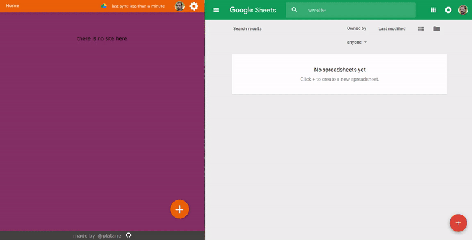
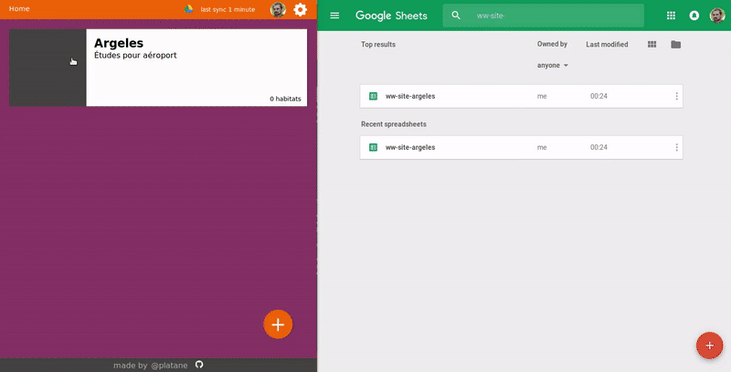

Usage
The app is pretty simple.
Keep in mind that everything you do is reflected in your google doc spreadSheet.
Create a site

Being logged to the application ( left on the screenshot ), you can fill up a form to create a new site.
Once that done, the status in the header will indicate that it is effectively persisted in a new google doc spreadSheet.
You can access your google doc spreadSheet ( rigth on the screenshot ). You should see a new one.
Create an habitat

Same thing, fill the form to create an habitat.
The app will create one sheet ( tab at the bottom of the google doc spreadSheet ) per habitat.
Notice how the data in the google doc spreadSheet is kept in sync as we work with the app ( rigth on the screenshot ).